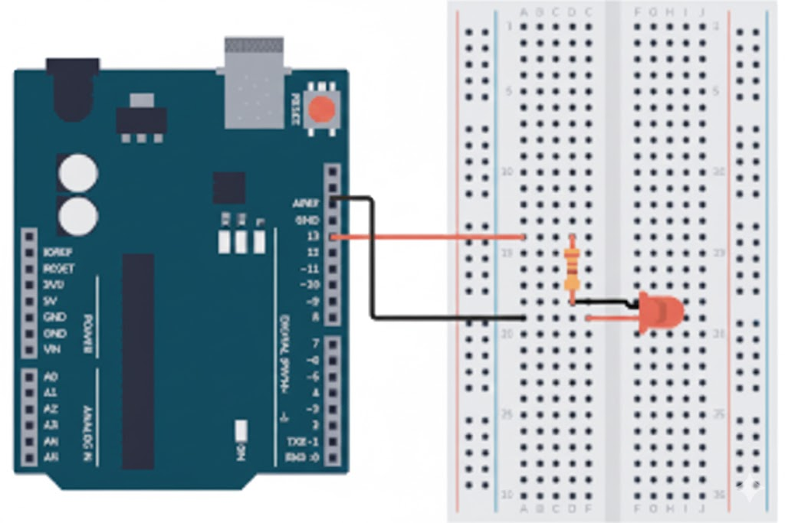

This foundational project is the 'Hello World' of electronics, teaching you the most basic and crucial concept: digital output and timing.
1. Concept and Description
In this project, we will use the Arduino to turn a Light Emitting Diode (LED) on and off repeatedly. This demonstrates **digital output**, where a pin is set to HIGH (5 volts, turning the LED ON) or LOW (0 volts, turning the LED OFF). We use the delay() function to pause the program for a specific amount of time, controlling the blink rate. Understanding this ON/OFF control is key to all Arduino projects.
2. Components Needed
(1) Arduino Uno board
(1) Breadboard
(1) LED (any color)
(1) 220 $\Omega$ Resistor (Essential for protecting the LED)
Jumper Wires
3. Physical Montage (Wiring Instructions)
Follow these steps carefully to wire your circuit. Remember, an LED has polarity: the longer leg is the **anode** (positive) and the shorter leg is the **cathode** (negative).
Insert the **LED** onto the breadboard.
Connect the shorter leg (cathode) of the LED to the **GND** (Ground) rail of the breadboard.
Insert one end of the **220 $\Omega$ Resistor** into the same row as the longer leg (anode) of the LED.
Connect the other end of the resistor to **Digital Pin 13** on the Arduino.
Connect the **GND** rail of the breadboard to the **GND** pin on the Arduino.

4. The Code (Arduino Sketch)
Copy and paste the code below into your Arduino IDE. The comments explain exactly what each line is doing.
// ----------------------------------------------------------------// Hello World (Blink an LED) Sketch// ----------------------------------------------------------------// Define the LED pin as a constant integer for clarity.// We are using the built-in LED pin (13) for this example.constint ledPin = 13;
void setup() {
// Setup code runs once when you press reset or power the board.// We initialize the digital pin as an output.pinMode(ledPin, OUTPUT);
}
void loop() {
// Main code runs repeatedly forever.// 1. Turn the LED on (set the voltage HIGH)digitalWrite(ledPin, HIGH);
// 2. Pause the program for 1000 milliseconds (1 second)delay(1000);
// 3. Turn the LED off (set the voltage LOW)digitalWrite(ledPin, LOW);
// 4. Pause the program for another 1 seconddelay(1000);
}